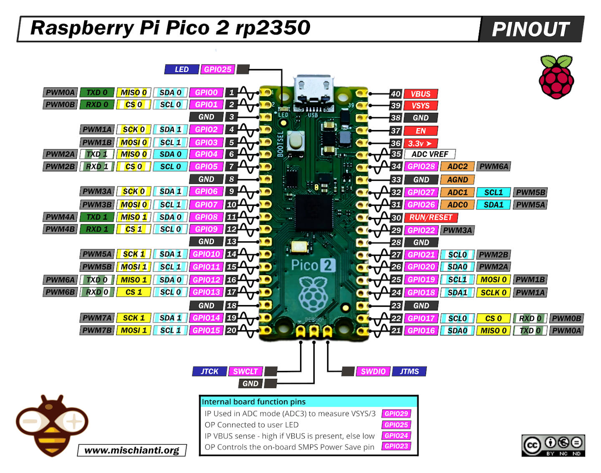
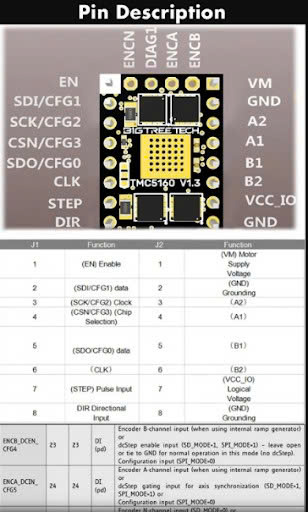

Picotool
Pinout RP2350 Pico2
{kind=link}
Pinout TMC5160
{kind=link}
Installation
Install package and dependencies
sudo apt update sudo apt install cmake build-essential libusb-1.0-0-dev
CLone picotool from github
git clone https://github.com/raspberrypi/picotool.git cd picotool
Build pictotool
mkdir build cd build cmake .. make -j$(nproc)
Install system-wide
sudo make install
Verification
Plug pico board to laptop (hold BOOTSEL to enter USB mass storage mode), then invoke command
picotool info
If you install successfully, you will see information about the device.
Command detail
make -j$(nproc)
Meaning
make → the build program in Linux. It reads the
Makefileto compile the project.-jN → tells
maketo run N jobs in parallel (compile multiple files at the same time).$(nproc) → a shell command that returns the number of CPU cores on the system.
Example
If your machine has 8 cores, then
$(nproc) = 8. So the command expands to:make -j8This runs 8 parallel build processes, using all CPU cores to speed up the compilation.
Comparison
make→ only 1 job at a time.make -j4→ up to 4 jobs in parallel.make -j$(nproc)→ automatically uses all available CPU cores (fastest).
Summary
make -j$(nproc)= compile using as many jobs as CPU cores → maximum build speed.
sudo make install
When you build software from source (with cmake .. && make), the files are compiled but stay inside your build/ folder. They aren’t “installed” on the system yet:
make install → runs the install rules defined in the project's CMakeLists.txt or Makefile.
Typically copies binaries (picotool, my_program, …) into system folders like /usr/local/bin/.
May also copy libraries into /usr/local/lib/, headers into /usr/local/include/, etc:
sudo → needed because writing into /usr/local/bin or /usr/local/lib requires root permissions.
So for example, after:
cmake ..
make
sudo make install
You can run the program globally, e.g. just type:
picotool
from any folder, instead of having to run it from inside build/.
Note
If you don’t run sudo make install, you can still use the program, but you must call it with a relative path, e.g.:
./build/picotool
sudo make install is optional, but convenient if you want the tool to be available system-wide.
Common errors
Wrong uf2 file for board
You will see the error below
Family ID 'rp2040' cannot be downloaded anywhere ERROR: This file cannot be loaded onto a device with no partition table
Your board shows up as RP2350 (Pico 2), but your .uf2 was built for RP2040. The UF2 header contains a family ID; RP2040 and RP2350 are different, so the bootloader refuses it.
To solve this problem, please follow the commands below:
rm -rf build mkdir build cd build cmake -DPICO_PLATFORM=rp2350 -DPICO_BOARD=pico2 .. make -j$(nproc)
Then you can load uf2 file to pico board
sudo picotool load <name_file>.uf2 -f\
Failed to open /dev/ttyACM0
If you see this error in Serial Monitor in VScode, this means the configuration of Serial Monitor is wrong. To fix
it, you have to open Command Palette (Ctrl + Shift + P) -> enter Preferences: Open Settings (JSON)
Add or edit the configuration:
"C_Cpp.default.configurationProvider": "ms-vscode.cmake-tools",
"serialport.defaultBaudRate": 115200,
"serialport.enableRTSCTS": false,
"serialport.enableDTR": false